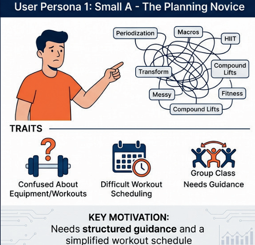
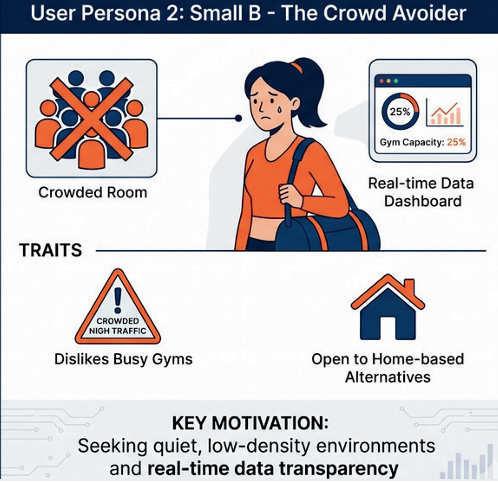
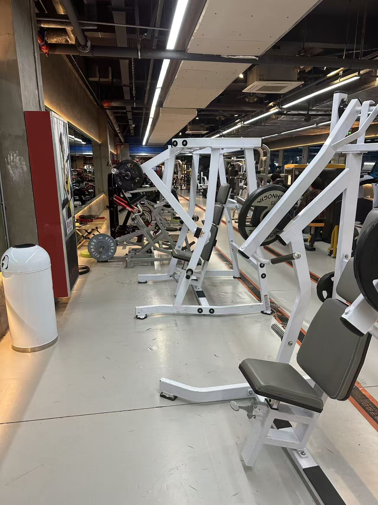
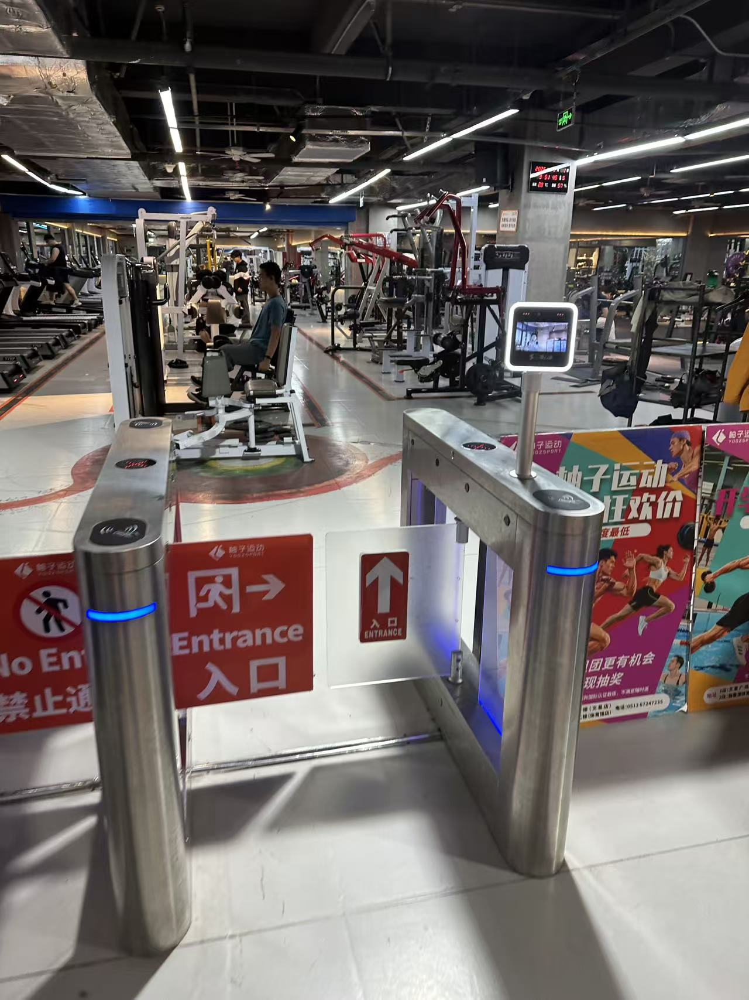
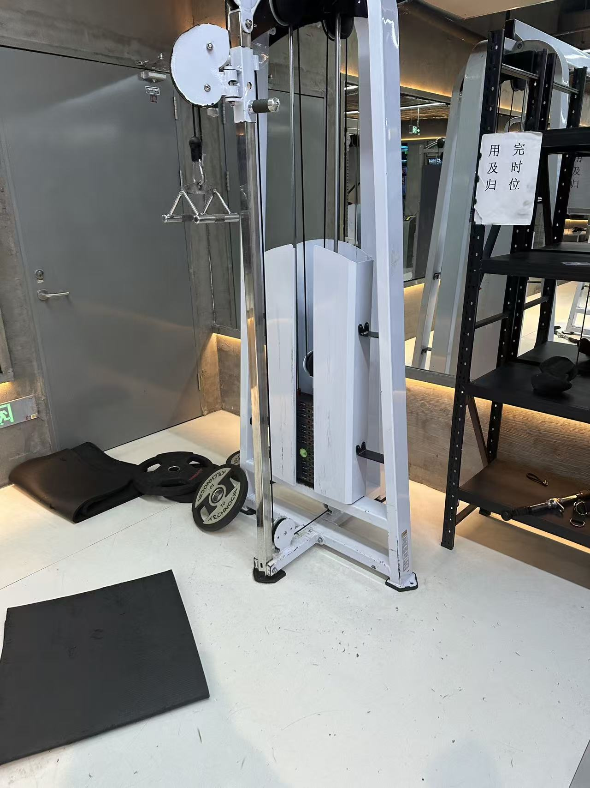
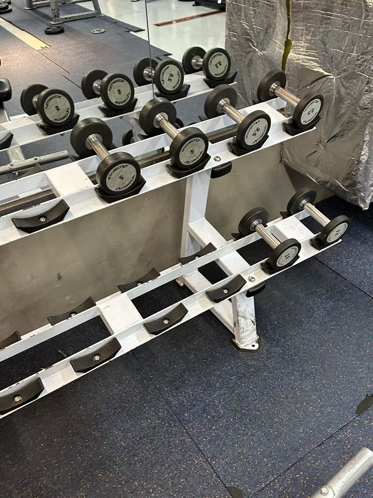

01. Motivation & Research
Our team chose the Active Track because we recognized a fundamental gap in how fitness is approached within university environments like XJTLU. While students are health-conscious, the "Active" lifestyle often remains unoptimized due to scientific data opacity. FitMatrix was born from the desire to demystify complex physiological data. By focusing on Active technology, we can address the "gym anxiety" and "training plateaus" that often lead to high dropout rates among beginners. Our platform ensures that physical activity is purposeful, data-driven, and engaging. We believe that by creating a scientific feedback loop—using MET calculations and real-time occupancy tracking—we can empower students to move from intuitive training to precise, high-performance habits.
Lyons et al. (2014) [1]
- InsightSelf-monitoring efficacy: Validated that systematic tracking is the most effective technique for adherence.
- MethodElectronic validation: Proved the utility of lifestyle activity monitors for behavioral change.
- ProvenBehavioral framework: Established data as a core driver for sustained motivation.
- OversightCognitive load: Overlooked the intimidation factor beginners face during complex goal setting.
- GapVisual empathy: Failed to explore intuitive, image-based goal setting to lower entry barriers.
- IsolationStatic focus: Missed the critical link between personal metrics and the external physical environment.
Haynes (2009) [2]
- DiscoveryDecision satisfaction: Identified how prolonged decision time directly degrades user satisfaction.
- StrategyChoice boundaries: Established the need to minimize cognitive effort in selection loops.
- EfficiencyLoop optimization: Validated streamlined booking-to-check-in flows for higher engagement.
- OversightSpatial data: Failed to account for real-world facility occupancy in the decision process.
- GapDynamic context: Ignored how unpredictable gym environments disrupt the satisfaction loop.
- RigidityLimited models: Focused on single-store models, missing flexible hybrid solutions.
Zayim et al. (2023) [3]
- AnalysisCognitive metrics: Pioneered task analysis to estimate load in mobile health record UIs.
- BarrierData intimidation: Identified BMI/Caloric numbers as significant cognitive barriers for novices.
- ValidationUI Efficiency: Successfully mapped complex data flows to user interaction speed.
- GapEnvironment sync: Failed to integrate real-time spatial awareness into the health data loop.
- OversightNovice empathy: Lacked solutions for those overwhelmed by professional-grade medical stats.
- IsolationDigital silos: Missed opportunities to break spatial constraints via flexible delivery.
Cselik et al. (2026) [4]
- ProvenEnvironmental link: Solidified the correlation between physical gym atmosphere and motivation.
- MetricDeterministic factors: Defined key motivational markers from a public health perspective.
- InsightLong-term behavior: Identified facility atmosphere as the key to sustainable gym usage.
- OversightStatic Analysis: Lacked a software-based mechanism to solve gym "Blind Box" uncertainty.
- GapSocial anxiety: Missed live occupancy tracking as a tool to mitigate user social discomfort.
- RigidityAt-home logic: Failed to integrate home-private flexibility into store-centric models.
Product: Keep
- StrengthVast library: Offers the most comprehensive standardized video guides available.
- UX LoopSeamless friction: Highly optimized "booking-payment-consumption" online cycle.
- EconomyLow barrier: Subscription models that greatly alleviate user financial pressure.
- UX OversData intimidation: Forces beginners to face overwhelming BMI/Caloric numbers.
- SpatialNo gym load: Fails to provide real-time data on facility congestion for offline users.
- DeliveryRigid solitary: Limits users to purely online or store-centric solitary training.
Product: Leke Gym
- ModelSmart automation: Successful implementation of self-service, unmanned facility loops.
- DecisionMinimal friction: Drastically reduced time required for offline check-ins.
- FinancePay-as-you-go: Modern financial model that abandons aggressive hard-selling.
- Blind BoxStatus opacity: Actual gym environment remains unpredictable without live data.
- AnxietyCongestion: Users remain vulnerable to equipment shortages and peak-hour crowds.
- SpatialRigid store: No intermediate flexible solutions for busy home-based users.
Product: Xunji
- StrengthQuantified-self: Unmatched precision in recording workout trajectories and load.
- TrackingProgression: Effectively enables long-term adherence via detailed weight logs.
- ScientificHardcore focus: Designed specifically for data-driven, experienced lifters.
- UX OversCognitive Load: Extreme data density intimidates and confuses beginners.
- EmpathyGoal setting: Missing visual-based, intuitive calibration methods.
- SpatialEnvironment: Completely ignores external factors like live gym traffic.
Product: Supermonkey
- DesignImmersive O2O: Successfully combined high-end branding with online booking.
- DecisionFast friction: Minimal time spent between booking and entering the class.
- ModelClass-based: Pioneered a successful model without long-term membership pressure.
- CrowdingCongestion: Unable to solve the gap in equipment and locker availability.
- RigidityLocation-only: Rigidly tied to store schedules with no at-home flexibility.
- AnxietyPrivacy: Boutique environments can heighten social anxiety during over-capacity.


02. User Requirements

- ✔ Visual Grid Calibration: Replaces complex text inputs with an interactive 3x3 grid.
- ✔ Live Occupancy Feedback: Displays real-time gym load to mitigate social anxiety.
- ✔ Adaptive Theming: Dynamically switches UI based on personal attributes.





02. User Requirements
3 must-haves for the system to be considered “Playful”
- Visual Grid Calibration: Replaces traditional text inputs with an interactive 3x3 grid to make physiological goal-setting intuitive and engaging.
- Live Occupancy Feedback: Utilizes dynamic pulses and color-coded scales to display real-time gym load, significantly increasing data transparency.
- Adaptive Interface Theming: Switches UI color schemes dynamically based on user attributes to provide immediate, personalized visual confirmation.
Interviews or Site Observation (BODI Gym)
03. Ideation & Alternatives
8 rapid hand-drawn sketches of different UI ideas


Alternative A: List-based Plan
Traditional text-heavy exercise lists without visual context.
Alternative B: Matrix-driven UI
Interactive grid mapping body types to scientific MET protocols.
04. Technical Implementation

https://fitgrid-demo.vercel.app
| Member Name | Focus Area | Specific Contributions |
|---|---|---|
| You | Full-Stack Dev | Core MET/TDEE algorithm logic, Firebase integration, and Matrix UI implementation. |
| Haijin Xia | Frontend Dev | Chart.js data visualization components and real-time gym load chart rendering. |
| Yifan Xu | Architect | System data flow design, Firestore schema definition, and backend API setup. |
| Yiyang Lu | UI/UX Design | High-fidelity Figma prototyping, component styling, and usability testing coordination. |
05. Evaluation & Reflection
Social & Ethical Implications
We addressed data privacy by using Firebase Auth and ensured body-positive language in our matrix descriptions to avoid promoting body dysmorphia among students.
AI Usage
AI was used to optimize Tailwind CSS layouts, polish the Energy Systems Guide content, and assist in debuggin complex Chart.js configurations.